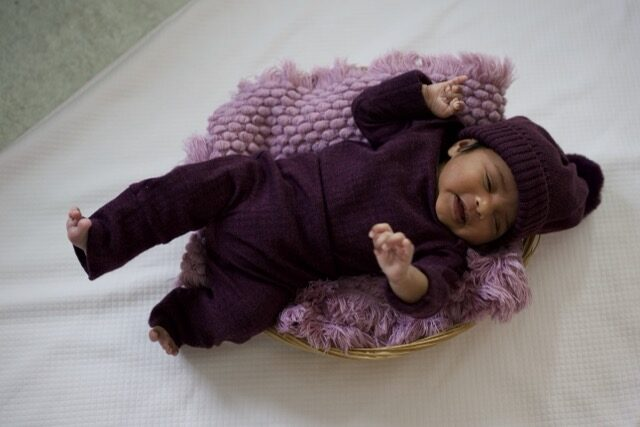
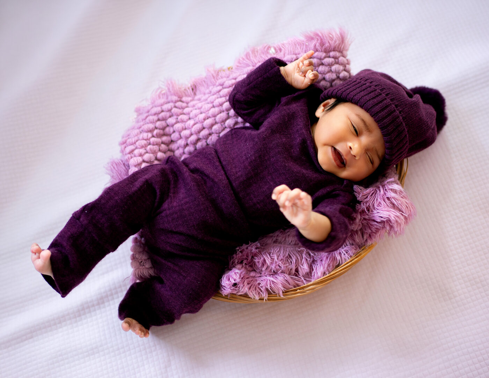
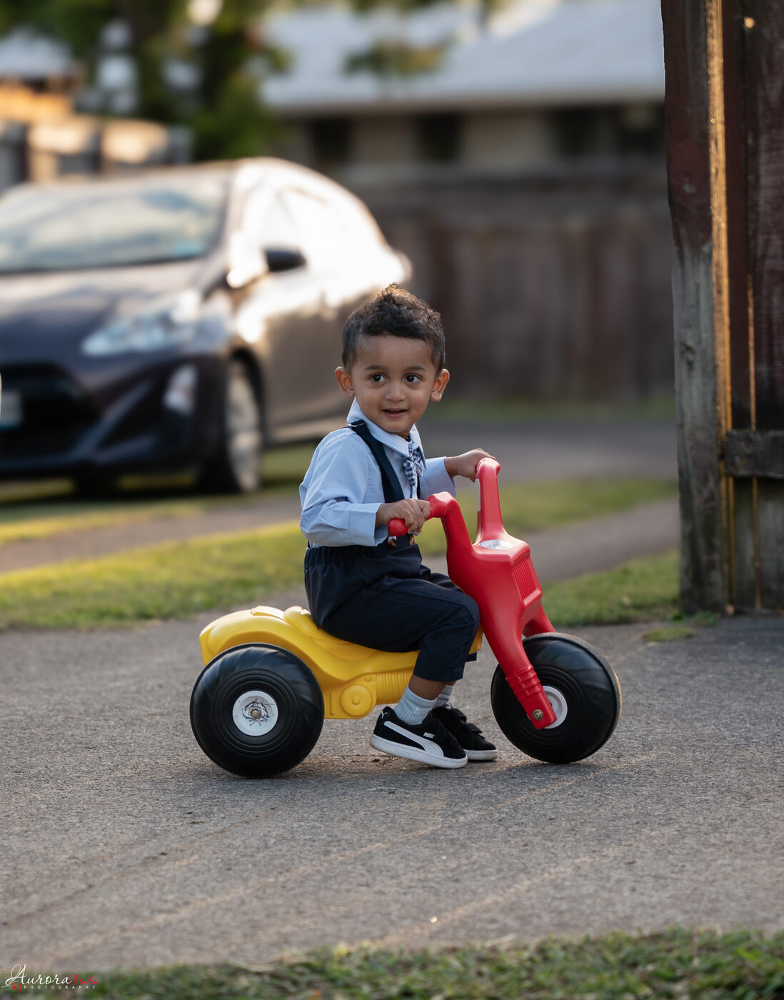
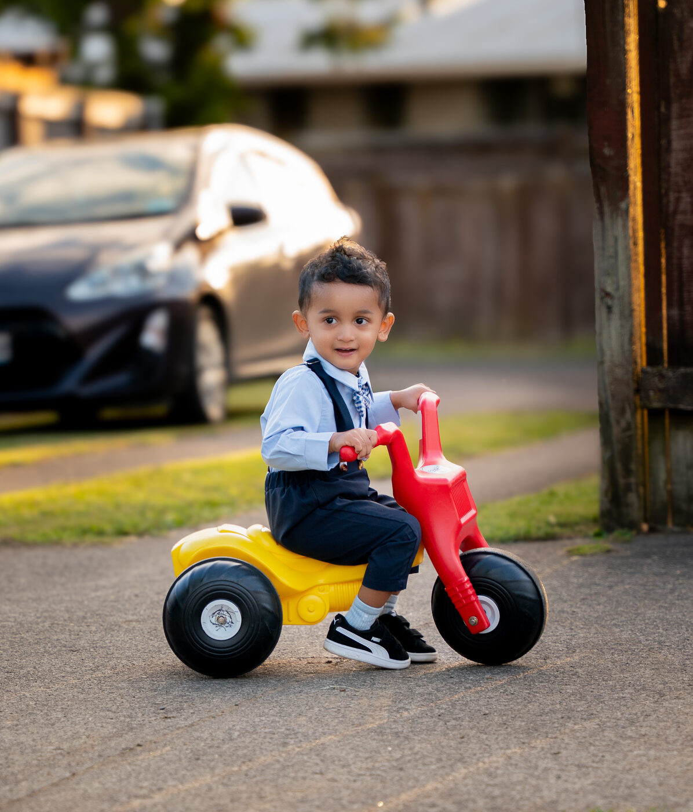
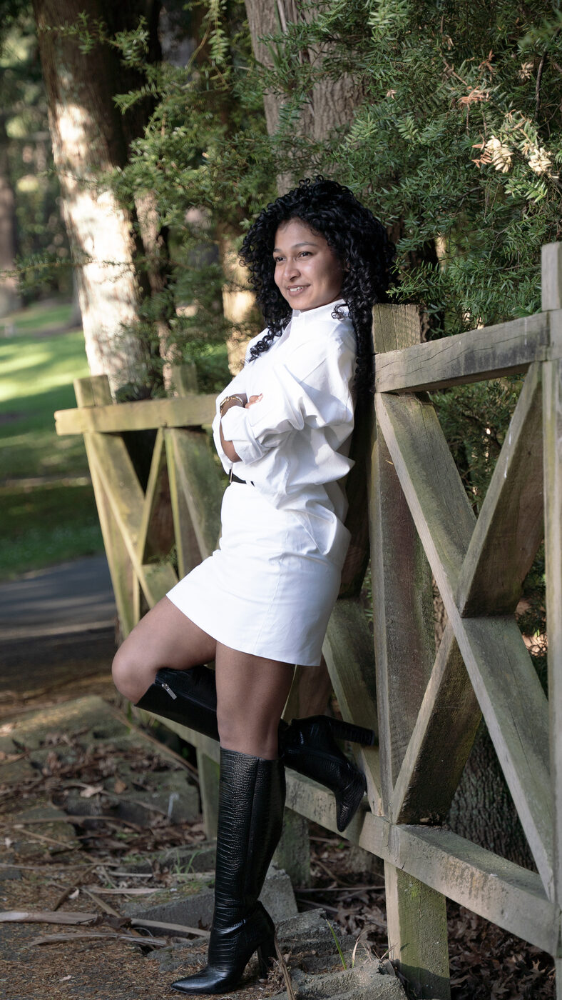
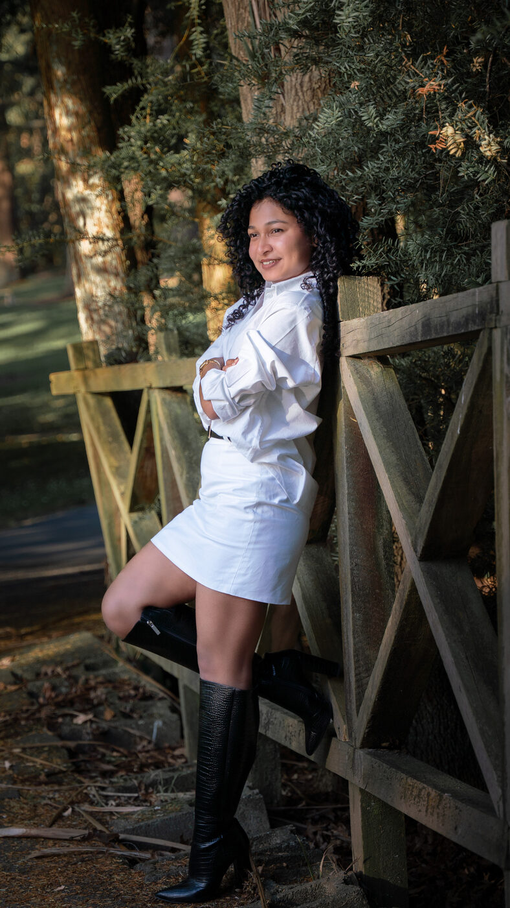
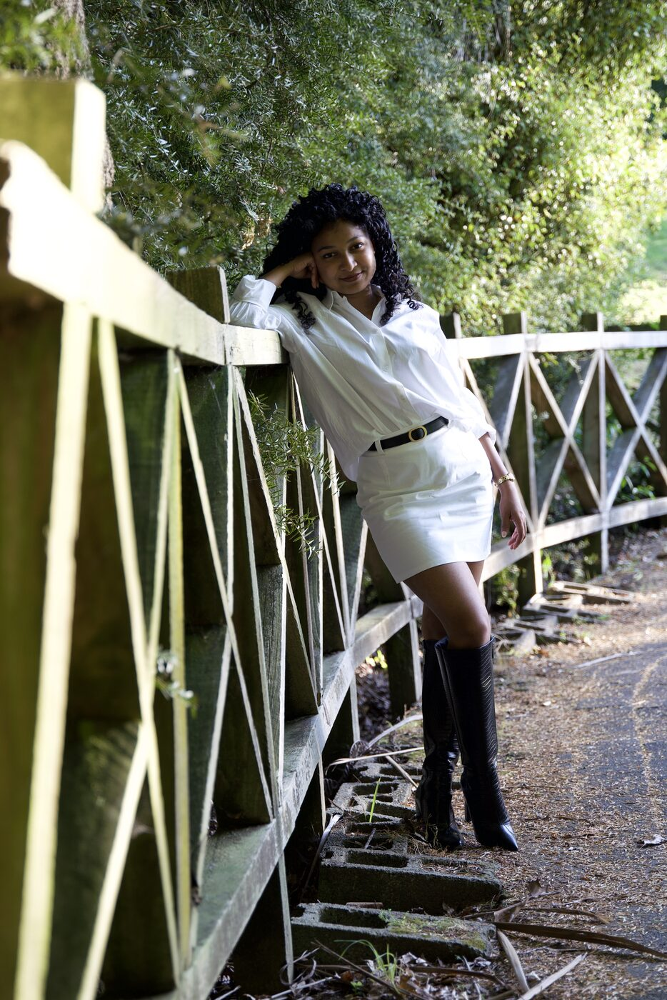
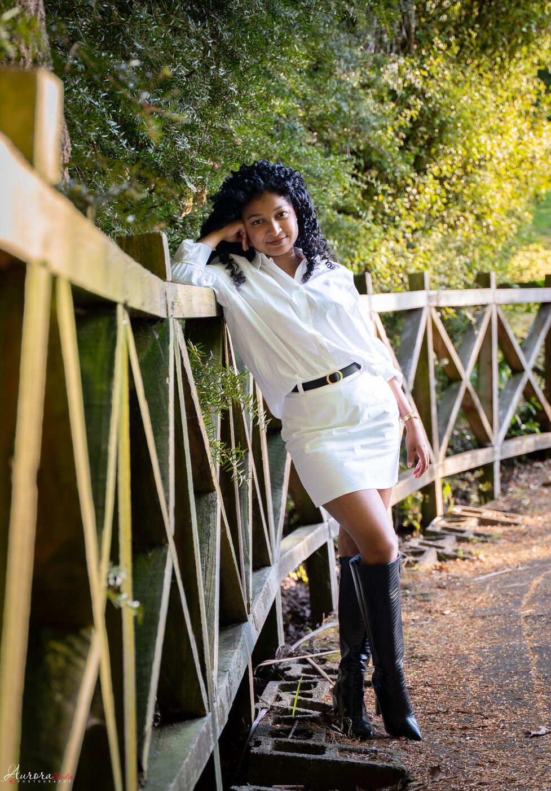
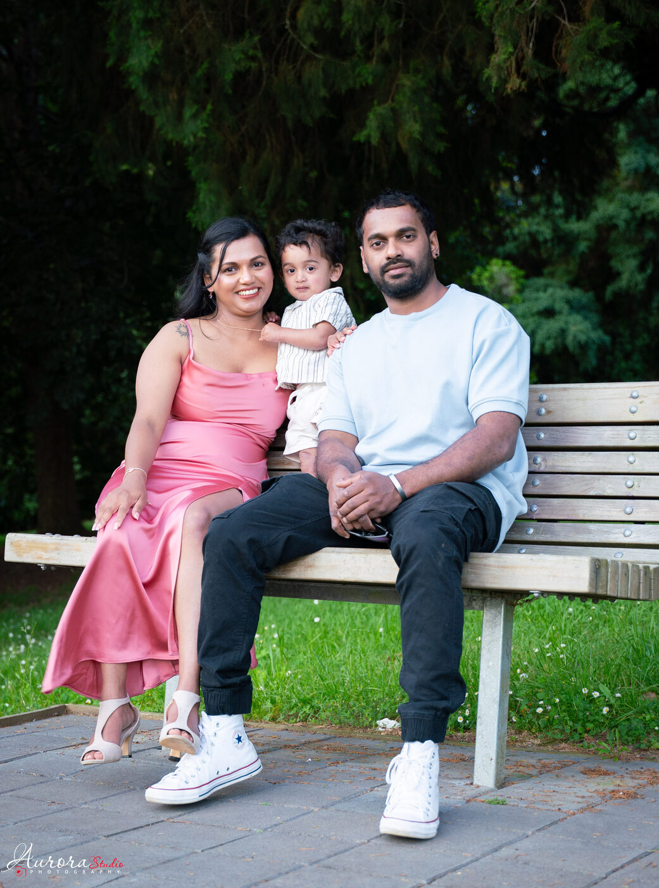
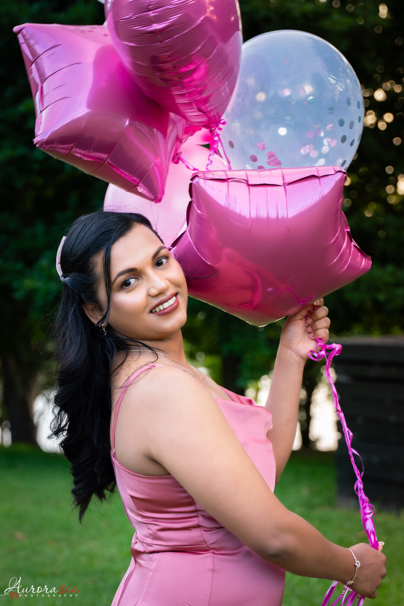

Rajith Kumarapeli
Photo Editor — Photoshop & Lightroom
I retouch and colour-correct portrait and event photography, working from raw files through to a polished final set. Editing since 2018, currently averaging 10 images every 15–20 minutes without cutting corners on quality. Drag the sliders below to see the edits.
Hamilton, New Zealand rajithakumarapeli@gmail.com 027 332 5743
Colour correction, skin retouching and background clean-up — drag each divider to compare.








Delivered edits from recent shoots.

Family sessionColour grading and consistency across a multi-subject scene

Birthday portraitRetouching and warm colour grade for an evening event